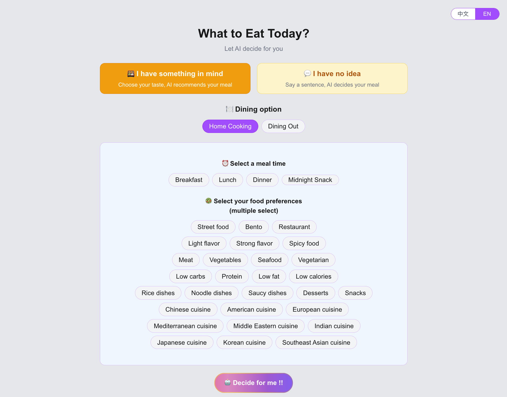
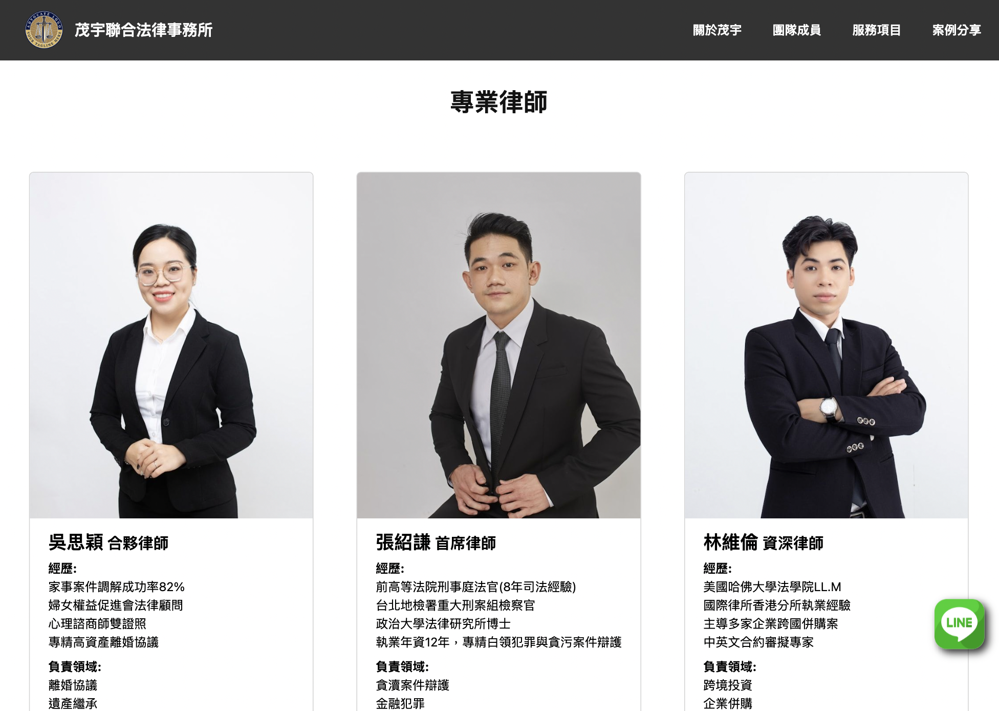
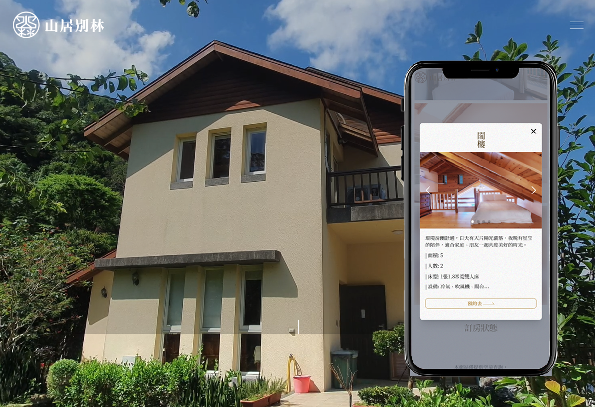

嗨，我是 Yashien Lin，擁有三年經驗的前端工程師。主力使用 Vue / Nuxt.js 開發產品，並透過個人專案持續深耕 React / Next.js，搭配 Tailwind CSS 或 Bootstrap 實作響應式介面。
從切版到串接 API，享受從無到有的過程。熟悉 Git 版本控制、Figma 設計協作與 Slack、Trello 等團隊工具，能與設計師、後端工程師及PM緊密合作，在技術挑戰與使用者需求間取得平衡，交付以使用者體驗為核心的功能。
持續保持好奇與熱情，期待用程式創造更多兼具 功能性與美感 的作品。
使用 Vue 2/3 與 Nuxt 開發與維護多個內部系統與網站，並維護 PHP Laravel 專案，實作以 Blade 進行伺服器端渲染的介面，及整合 Vue 的 API 驅動前端，涵蓋 MVC 與 MVVM 架構。
使用 Vue 3 與 Element Plus 開發並維護遊戲平台後台，透過抽取可重用元件優化前端架構，提升開發效率。在專案管理上，與後端及 PM 緊密合作，並採用 Jira 與 Git 進行的任務管理與團隊協作。
負責政府標案與環境工程專案的全端開發，使用 HTML/CSS/JS 搭配 C# ASP.NET 與 MS SQL 實現完整的系統功能。
完成 JavaScript 養成班後進入 Vue 作品實戰班，透過實作專案系統學習 Vue 框架，奠定前端工程基礎。
深耕 JavaScript 核心技術，並整合交通部 TDX API、Leaflet 與MapBox開發觀光與自行車道地圖平台，實現全台景點資訊的即時查詢與地圖視覺化呈現。
自學 HTML、CSS、JavaScript / jQuery 後，為強化能力挑戰連續 30 天發表 JavaScript 技術文章，最終成功完賽。
轉職後學習 Python、MySQL、MongoDB、Spark、Azure AI 等技術。在小組專題中負責前後端串接，因此發現對前端開發的濃厚興趣，確立前端工程師的職涯方向。
擔任各部門溝通橋樑，協調工廠、德國/美國客戶、PM 及財務，培養跨部門溝通與多工協調能力。深思後決定轉職踏入 IT 領域，重新出發。

由 AI 驅動的美食推薦應用，使用 Next.js 與 Tailwind CSS 開發。透過 OpenAI API 進行自然語言處理，分析使用者心情與意圖，並整合 Google Places API 提供個人化食譜或餐廳。專案部署於 Vercel，配合自動化 CI/CD 流程。

前端使用 Nuxt.js 並以 SSG
模式預先生成靜態頁面，提升效能與載入速度。後端整合 Headless CMS
Strapi，透過 API 提供內容，實現前後端分離。
專案採 Netlify (前端) 與 Railway (後端)
分離部署，提升效能與部署彈性。

與後端工程師共同接案，含房型介紹、景點資訊、即時空房查詢。
使用Vue3 + Tailwind + Vite，全程參與從設計、切版到 API
串接，學習到如何從無到有的建立一個專案。